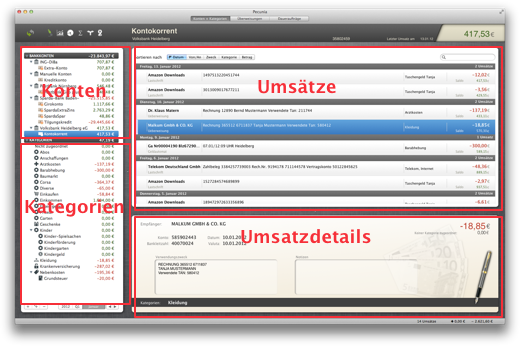
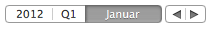

|
Umsatzsicht |

Wenn Sie links ein Konto oder eine Kategorie auswählen, erscheinen rechts die zugeordneten Umsätze. Dabei werden nur die Umsätze angezeigt, die zum gewählten Zeitraum passen. Den Zeitraum stellen Sie links unten über folgende Schaltflächen ein:

In der Umsatzsicht können Sie: